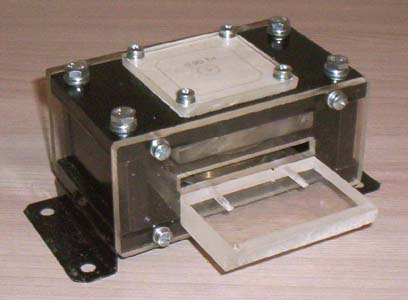
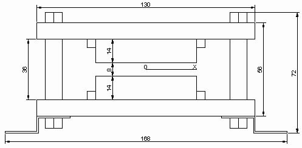
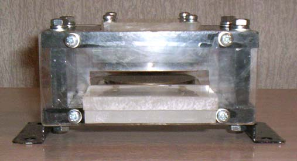
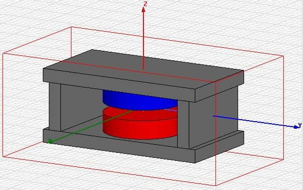
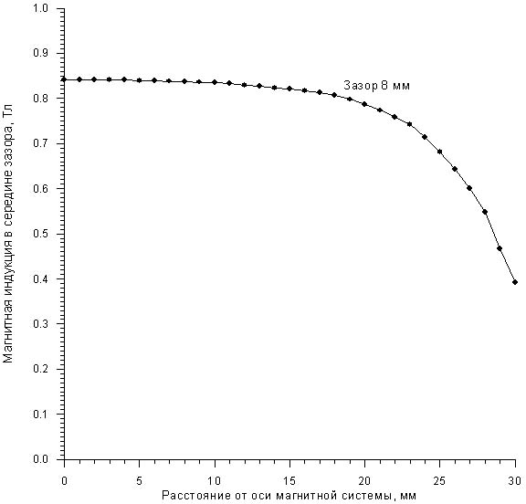
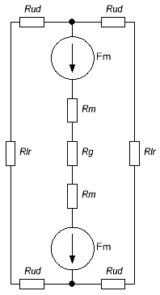
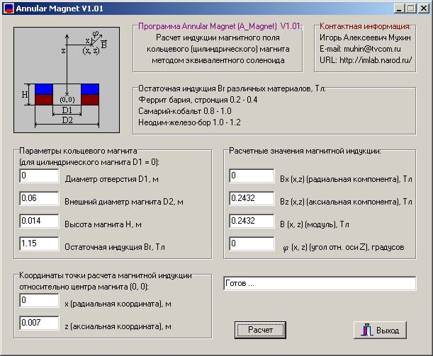
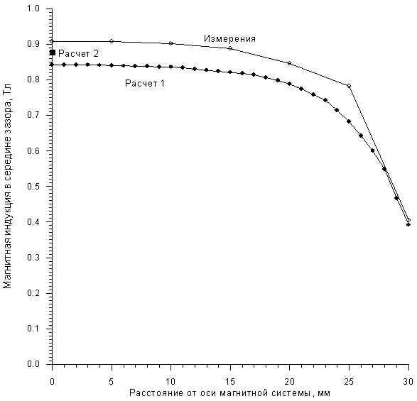
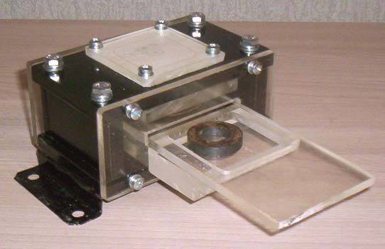

Магнитная система с индукцией около 1 Тл в объеме диаметром 40 мм высотой 8 мм

С учетом опыта уже сконструированной на цилиндрических постоянных магнитах состава неодим-железо-бор с остаточной индукцией более 1 Тл и коэрцитивной силой по намагниченности около 1000 кА/м [6, 7] магнитной системы, генерирующей в рабочем зазоре диаметром 20 мм высотой 5 мм магнитное поле с индукцией порядка 1 Тл [4], была рассчитана и изготовлена аналогичная магнитная система на постоянных магнитах большего типоразмера с увеличенной более чем втрое по объему рабочей зоной. Подобные системы могут быть использованы для проведения различных экспериментов, магнитных измерений, проверки и калибровки датчиков магнитной индукции [8], а также для намагничивания постоянных магнитов [5], например, магнитопластов [3] на основе ферритов или железо-алюминий-никелевых сплавов (ални - ЮНД, алнико - ЮНДК). Конструкция магнитной системы приведена на рис. 1. Важным ее достоинством является отсутствие потребления энергии при генерации магнитного поля.

Рис. 1. Эскиз магнитной системы с магнитной индукцией в зазоре около 1 Тл: цилиндрические постоянные магниты типоразмера Д60х14 (диаметр - 60 мм, высота 14 мм) состава Nd-Fe-B имеют намагниченность вдоль оси, ярмо состоит из верхней, нижней и двух боковых стальных плит толщиной 10 мм каждая (малоуглеродистая сталь).
Магнитная система состоит из двух постоянных цилиндрических магнитов состава неодим-железо-бор, намагниченных вдоль оси в установке импульсного намагничивания [10]. Магниты установлены внутри О-образного ярма из четырех стальных плит, служащего для замыкания магнитного потока. Внешний вид магнитной системы показан на рис. 2.

Рис. 2. Внешний вид магнитной системы (ширина рабочего зазора 8 мм).
Перед изготовлением магнитной системы был произведен расчет ее параметров методом конечных элементов [2, 9] для постоянных магнитов состава неодим-железо-бор, обладающих следующими свойствами [6, 7]: остаточная индукция 1.15 Тл, коэрцитивная сила по намагниченности 850 кА/м, магнитная проницаемость 1.05. Принятые для расчетов магнитные свойства стали, использованной для изготовления ярма, показаны на рис. 3 (соответствуют марке стали 1010 или Ст10). Расчетная модель магнитной системы в программе Ansoft Maxwell [2] изображена на рис. 4. Результат расчета магнитной индукции в рабочем зазоре представлен на рис. 5.
Рис. 3. Кривая намагничивания малоуглеродистой стали, использованной при расчете магнитной системы.

Рис. 4. Трехмерная модель магнитной системы для расчета методом конечных элементов в программе Ansoft Maxwell [2].

Рис. 5. Аксиальная составляющая магнитной индукции в середине зазора (нормальная составляющая вдоль оси 0 - X рис. 1), рассчитанная методом конечных элементов [2, 9].
В соответствии с расчетами, магнитная индукция в центральной зоне диаметром 40 мм и высотой 8 мм имеет среднее значение примерно 0.83 Тл, отклонение не превышает 5 %.
Дополнительно был также выполнен расчет магнитной системы методом магнитных проводимостей (магнитных сопротивлений) [7]. Эквивалентная магнитная цепь магнитной системы приведена на рис. 6.

Рис. 6. Эквивалентная магнитная цепь магнитной системы. Fm – магнитодвижущая сила одного магнита, Rm – магнитное сопротивление одного магнита, Rg – магнитное сопротивление воздушного зазора, Rud – магнитное сопротивление половины верхней или нижней стальной плиты, Rlr – магнитное сопротивление боковой стальной плиты.
Для эквивалентной магнитной цепи можно записать соотношение:

где F – магнитный поток через воздушный зазор, Fm – магнитодвижущая сила (МДС) одного постоянного магнита, R – суммарное магнитное сопротивление цепи:

где Rm - магнитное сопротивление одного магнита, Rg - магнитное сопротивление воздушного зазора, Rud - магнитное сопротивление половины верхней или нижней стальной плиты, Rlr - магнитное сопротивление боковой стальной плиты. МДС магнита может быть выражена через его остаточную индукцию Br, магнитную проницаемость mM (mM ≈ 1.05) и высоту (толщину) h (h = 14 мм):
где m0 = 4p ∙ 10-7 Гн/м – магнитная постоянная. Тогда магнитная индукция в воздушном зазоре системы B0:
где H0 – напряженность магнитного поля в воздушном зазоре.
Магнитное сопротивление воздушного зазора Rg:

где D2 – диаметр магнита и, соответственно, воздушного зазора (D2 = 60 мм). Магнитное сопротивление постоянного магнита Rm:
Магнитное сопротивление половины верхней или нижней стальной плиты Rud:

где lUD – расстояние, которое проходит магнитный поток в половине верхней или нижней стальной плиты (lUD = 55 мм), mST – магнитная проницаемость стали (mST ≈ 1000), T – толщина плиты (T = 10 мм), b – ширина плиты (b = 70 мм). Магнитное сопротивление боковой стальной плиты Rlr:
где lLR – расстояние, которое проходит магнитный поток в боковой стальной плите (lLR = 46 мм). Тогда:
Для значений:
Br = 1.15
Тл
h = 0.014
м
g = 0.008 м
D2 = 0.06 м
b = 0.07 м
T = 0.01 м
lUD
= 0.055 м
lLR
= 0.046 м
mM
= 1.05
mST
= 1000
получаем:
Результаты расчетов двумя разными методами вполне соответствуют друг другу (магнитная индукция в центре зазора 0.842 и 0.877 Тл, соответственно).
Для уточнения остаточной индукции использованных цилиндрических постоянных магнитов с помощью тесламетра [8] была измерена магнитная индукция в центре торцов магнитов. Результаты измерений: первый магнит - 250 мТл с одной стороны и 250 мТл с другой, в среднем 250 мТл, второй магнит - 265 мТл с одной стороны, 224 мТл с другой стороны, в среднем 244.5 мТл. Далее был сделан расчет магнитной индукции на торце цилиндрического магнита с помощью программы A_Magnet [1] в предположении, что остаточная индукция постоянных магнитов состава Nd-Fe-B составляет 1.15 Тл. Расчетное значение магнитной индукции на торце цилиндрического магнита Д60х14 при этом составило 243.2 мТл (рис. 7), что хорошо согласуется с результатами измерений (244.5 и 250 мТл). Таким образом, принятое в ранее проведенных расчетах магнитной системы значение остаточной индукции 1.15 Тл соответствует реально измеренному.

Рис. 7. Расчет магнитной индукции в центре торца цилиндрического магнита состава Nd-Fe-B (остаточная индукция 1.15 Тл) типоразмера Д60х14.
Измерения индукции магнитного поля в зазоре изготовленной магнитной системы проводились с помощью тесламетра [8]. Результаты измерений достаточно хорошо согласуются с данными расчетов (рис. 8).

Рис. 8. Результаты расчетов и измерений аксиальной составляющей магнитной индукции в в середине зазора магнитной системы (нормальная составляющая вдоль оси 0 - X рис. 1). Расчет 1 - расчет методом конечных элементов [2, 9], расчет 2 - расчет методом магнитных проводимостей (магнитных сопротивлений) [7].
Характеристики реализованной магнитной системы приведены ниже:
Магнитная система может использоваться для одноосного намагничивания постоянных анизотропных ферритовых магнитов и магнитов из сплавов ални, алнико. Максимальный размер магнита: диаметр 40 мм, высота 8 мм. Намагничивание производится по высоте. Для удобства намагничивания можно использовать контейнер (рис. 9). В отверстие контейнера размером 50 х 50 мм2 вставляется намагничиваемый магнит. Контейнер вдвигается в магнитную систему, затем выдвигается из нее.

Рис. 9. Использование магнитной системы для намагничивания постоянных магнитов.
Ссылки:
18.02.2019
Альтернативные источники
энергии
Компьютеры и
Интернет
Магнитные поля
Механотронные системы
Перспективные
разработки
Электроника и
технология